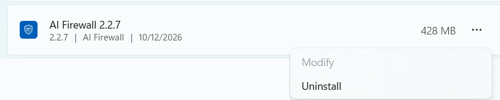

Uninstall¶
This page explains how to remove AI Firewall from your computer, and what happens when you do.
Read this first¶
- You need administrator access. AI Firewall runs as a protected part of the system. A standard user cannot stop or remove it. This is on purpose: it keeps protection from being switched off by mistake. If you do not have administrator rights, ask your IT team.
- Your company may not allow it. If your IT team manages your computer, they decide whether AI Firewall stays. Please ask them before you remove it.
- After removal you are not protected. Requests to AI tools are no longer checked.
- An update is not an uninstall. Updates keep your data and your connection to your company. Only an uninstall removes them.
- Quit the app first. Quit AI Firewall from the tray menu before you uninstall, so it puts the settings of your command-line tools back.
AI Firewall is available for Windows and macOS. There is no Linux version.
Windows¶
- Open Settings > Apps > Installed apps.
- Find AI Firewall followed by the version number, for example AI Firewall 2.2.7.
- Select the three-dot menu, then Uninstall. (Modify is greyed out. You cannot change the installation.)
- Approve the administrator prompt (UAC).
AI Firewall is installed for every user of the computer, so removing it needs an administrator. If you are signed in as a standard user, Windows asks for the name and password of an administrator. Without them nothing is removed. If you do not have them, ask your IT team.

What the uninstaller removes¶
- The app and its folder in
C:\Program Files\AI Firewall. - The protection services and scheduled tasks that restart the app.
- The system proxy setting that sends AI traffic through the firewall. Your browsers go back to normal. If a browser is already open, restart it.
- The AI Firewall certificate ("AI Firewall Local CA"), from the computer and from every user.
- The browser settings that AI Firewall added.
- The settings AI Firewall added for Claude Code and Codex. Your own settings are kept. If Claude Code pointed at the firewall, its original address is put back.
- Your local data, for every user on the computer: the activity history, saved settings, logs and the connection to your company.
Silent uninstall, for IT teams¶
IT teams can remove AI Firewall without prompts. See Windows and macOS in the Admin Guide.
macOS¶
Do not drag the app to the Trash. That removes only the app. The certificate, the proxy setting and the background services stay on the computer.
Use the uninstall script that comes with the app. It works for every kind of installation (.dmg and .pkg).
- Quit AI Firewall from the menu bar.
- Open Finder > Applications.
- Right-click AI Firewall and select Show Package Contents.
- Open
Contents/Resources. - Double-click uninstall.command.
- When asked, type
removeand press Enter. - Enter your administrator password when asked.
Or, from Terminal:
"/Applications/AI Firewall.app/Contents/Resources/uninstall.command"
What the script removes¶
- The app, and its settings, preferences and logs.
- The background services and the login item.
- The AI Firewall certificate, from the login keychain and the System keychain.
- The system proxy setting, on every network connection, if it points at AI Firewall.
- The settings that AI Firewall added for Claude Code and Codex at the system level.
- Your local data and the connection to your company.
The script removes data only for the user who runs it. Another user on the same Mac keeps their local data.
If something is left behind on macOS¶
The script says on screen what it did and what it left. Read its last lines.
- The proxy setting. The script switches off the automatic proxy setting on every network connection that points at AI Firewall. A connection whose setting it cannot confirm as its own, for example your company's own proxy, it leaves alone, and says so in a line that starts with "Left the auto-proxy". If AI sites do not load afterwards, open System Settings > Network, select your connection, open Details > Proxies, and switch off Automatic proxy configuration.
- Your own Claude Code settings. The script removes the settings that AI Firewall added for Claude Code at the system level. It does not edit your own Claude Code settings file. If Claude Code still points at the firewall, remove the address that points at
127.0.0.1from your Claude Code settings.
What happens to your data¶
- On your computer: the activity history is deleted, and so is the list of replaced values. Once it is gone, replaced values cannot be turned back into the original text. The connection to your company is deleted too. If you install AI Firewall again, it is a fresh start.
- At your company: depending on the version, the app may send a short notice to your company's server when you uninstall. The device then shows as removed in the admin console. If no notice is sent, the device simply stops reporting.
- The device record and the history of what was recorded stay on the server. Your administrator removes the device's access and frees the licence seat. Uninstalling does not delete anything at your company.
- No notice is sent when your IT team removes the app for many computers at once.
After uninstalling: check¶
- Your browser opens AI sites normally. If a site does not load, restart the browser.
- The AI Firewall icon is gone from the menu bar or the tray.
Things that may stay behind¶
- An empty
C:\Program Files\AI Firewallfolder on Windows. - Settings for other tools that AI Firewall did not add. AI Firewall does not set up Aider, Continue, Cursor or Visual Studio Code, so there is nothing to remove. AI Firewall does not write to the Claude Code instructions file (
CLAUDE.md), so there is no note of ours to remove there. - On macOS, other users' local data (see above).
Common questions¶
Can I remove it to reinstall a newer version? You do not need to. Install the new version over the old one. Your data and your connection to your company stay.
I want to reconnect to a different company workspace. Uninstall, then install again. The connection to the old workspace is removed on purpose, so a new install does not join it again by itself.
Does uninstalling delete what my company has recorded about me? No. Those records stay on your company's server.